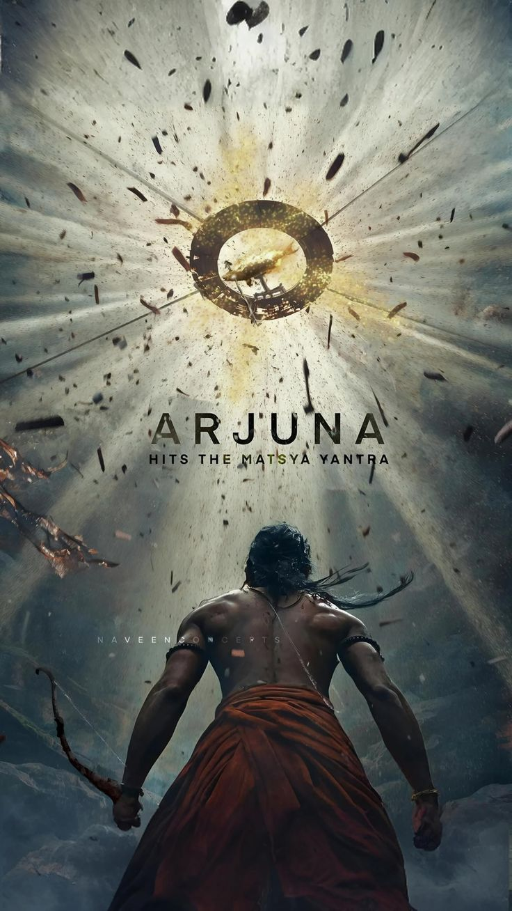
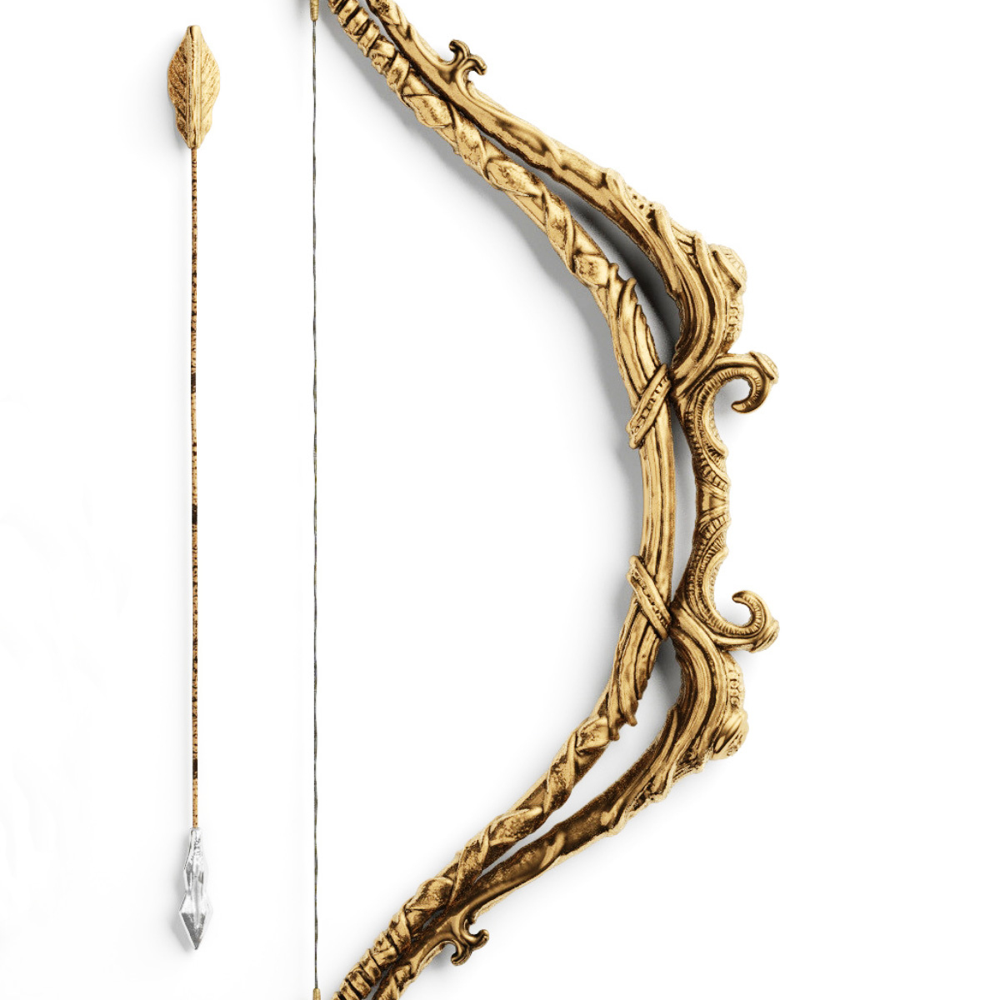

Weapon

Skill
Arjuna, the greatest warrior of the Mahabharata, was known for his unmatched skill in archery and his unwavering focus. Trained by Guru Dronacharya and blessed by Lord Shiva, he mastered divine weapons like the Pashupatastra and Brahmastra. His concentration was extraordinary—he could aim at a target without distraction, even in the dark. Arjuna was courageous, intelligent, and a master strategist on the battlefield. Despite his power, he remained humble, disciplined, and devoted to Lord Krishna. His faith, skill, and sense of duty made him the true symbol of dedication, bravery, and righteousness.
War
Arjuna was one of the most powerful warriors in the Kurukshetra war. He fought on the side of the Pandavas and was guided by Lord Krishna as his charioteer. Using his divine bow Gandiva, Arjuna defeated many mighty warriors including Bhishma, Karna, Jayadratha, and many others. His greatest moment came when he destroyed the entire Kaurava army with his unmatched archery skills and divine weapons like Pashupatastra and Brahmastra. Arjuna’s courage, precision, and strategy decided many key battles during the war. With Krishna’s guidance, he fought not just with strength, but with righteousness, making him the true hero of the Mahabharata.
Charecter
Arjuna was one of the central characters in the Mahabharata and is remembered as the ideal warrior and hero. He was the third Pandava, the son of King Pandu and Kunti, born with the blessings of Lord Indra, the king of gods. Arjuna’s character was a perfect blend of bravery, discipline, intelligence, and humility. He was deeply devoted to his duty (dharma) and to his mentor and friend Lord Krishna. In the Kurukshetra war, Arjuna showed both humanity and heroism — he hesitated to fight his own relatives, which led to Lord Krishna delivering the sacred teachings of the Bhagavad Gita. This moment showed his compassionate heart and moral struggle. Despite his inner conflicts, Arjuna stood for truth and justice, fulfilling his role as a warrior with honor. Overall, Arjuna’s character symbolizes courage with compassion, strength with wisdom, and devotion with duty — making him one of the greatest heroes in Indian mythology.
Family details
Arjuna was born to Queen Kunti and Lord Indra, the king of the gods, making him a divine warrior by birth. He was one of the five Pandava brothers—Yudhishthira, Bhima, Nakula, and Sahadeva—together known as the heroes of the Kuru dynasty in Hastinapura. Arjuna had four wives: Draupadi, the princess of Panchala; Subhadra, the sister of Lord Krishna; Ulupi, the Naga princess; and Chitrangada, the princess of Manipur. He had brave sons from each—Abhimanyu, Iravana, Babruvahana, and Shrutakarma—among whom Abhimanyu became famous for his heroism in the Kurukshetra war. Belonging to the royal Kuru lineage, Arjuna’s family was a blend of divine heritage, royal duty, and legendary valor.